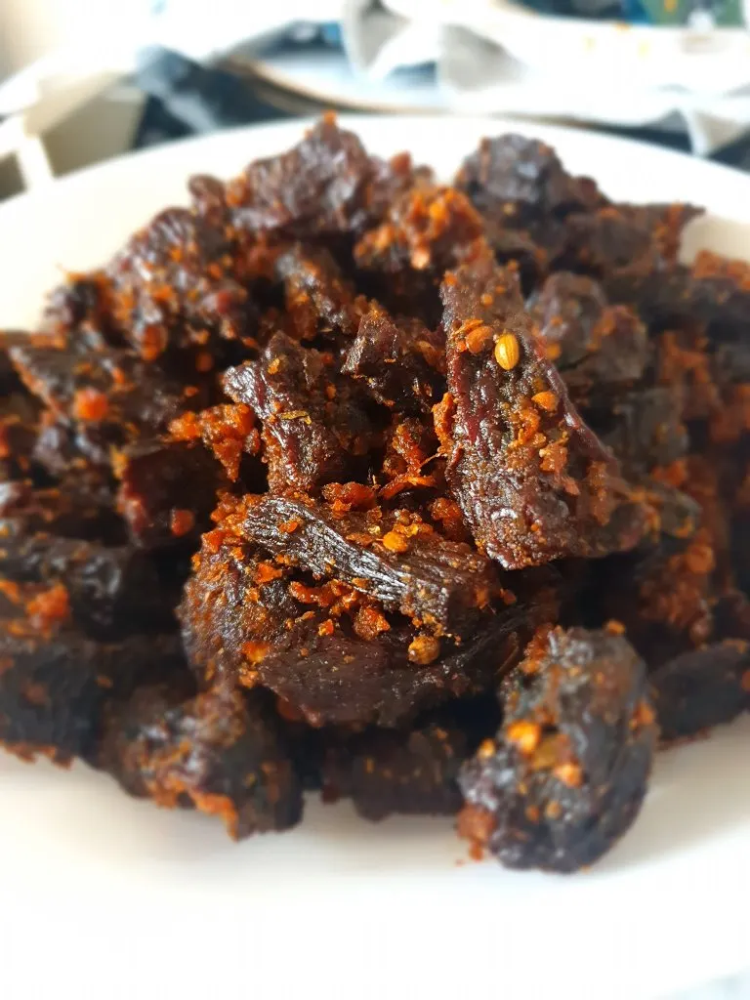

Sukuti Achar's Recipe

To make sukuti ko achar, first roast or lightly fry the sukuti (dried
meat) until it becomes warm, aromatic, and slightly crispy, then shred or
cut it into small pieces. In a pan, heat a little mustard oil and fry
chopped garlic, ginger, and green chilies until golden. Add the shredded
sukuti and toss it for a minute. Transfer everything to a bowl and mix in
finely chopped onions, tomatoes (optional), fresh coriander, salt, chili
powder, a squeeze of lemon, and a pinch of timur (Sichuan pepper) for the
classic Nepali flavor. Some people also add a splash of warm oil at the
end to enhance the aroma. Mix well and let it rest for a few minutes so
the flavors blend. Serve it warm with rice, chiura, or as a snack with
drinks.
Ingredients
- 1 cup sukuti (dried meat), shredded or cut into small pieces
- 2–3 tbsp mustard oil
- 1 medium onion, finely chopped
- 1–2 tomatoes (optional), finely chopped
- 1 tbsp ginger, finely chopped
- 1 tbsp garlic, finely chopped
- 2–3 green chilies, chopped
- 1–2 tsp chili powder (as per taste)
- ½–1 tsp timur (Sichuan pepper), crushed
- Salt to taste
- 1–2 tbsp lemon juice
- Fresh coriander, chopped
Steps
-
Prepare the sukuti:Roast or lightly fry the sukuti in a pan until
aromatic and slightly crispy. Then shred or cut it into small pieces.
-
Fry the spices: Heat mustard oil in a pan and sauté the garlic, ginger,
and green chilies until they turn golden and fragrant.
-
Mix with sukuti: Add the roasted sukuti into the pan and toss for 1–2
minutes so it absorbs the flavors.
-
Prepare the achar base: Transfer everything to a bowl and add chopped
onions, tomatoes (optional), crushed timur, chili powder, and salt.
- Add freshness: Squeeze lemon juice and add chopped coriander.
-
Combine: Mix everything thoroughly. Taste and adjust salt, chili, and
lemon.
-
Rest for flavor: Let it sit for 2–3 minutes so the flavors blend
together.
Home